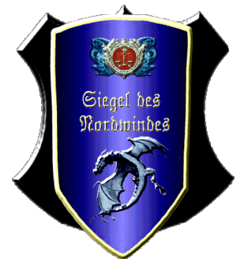

|

|
Das schwarze Brett
|
|
| Übersicht,
Anschläge und Stammtisch (RPG) |
|
Bekanntmachung der Klabauter (68  ) )
|
Fabius Alagos
  |
Durch den Beschluss der Vereinigung der Pumpenbetreiber die Fördermenge nicht der Marktsituation anzupassen und dementsprechend zu regulieren, sehen wir uns als aufsichtsführende Institution gezwungen die Fördermenge selbst zu begrenzen. Ansonsten droht durch den inflationären Petroleumpreis eine Hyperinflation und der Crash der gesamten Scherbenwirtschaft.
Somit sind alle Pumpenbesitzer mit einer Förderleistung von mehr als 40 Saugern aufgerufen, ihre Fördermenge anzugleichen, indem sie die Pumpenbesatzung auf maximal 2 Insassen regulieren oder die vorhandenen Sauger zurückbauen.
Sollte diesem Erlass nicht nachgekommen werden, behalten wir uns vor, ohne vorherige Anmahnung den Rückbau zwangsweise selbst durchzuführen, notfalls durch Abriss der Pumpe.
Desweiteren wird zur Finanzierung der Maßnahmen eine Steuer von 19% auf alle petroleumfördernden Gebäude erhoben.
Dieser Erlass tritt mit sofortiger Wirkung in Kraft, Einsprüche habe keine aufschiebende Wirkung. Wir werden aus Kulanz eine Handlungsfrist bis zum 1. Dunkelfrost einräumen.
Sollten die angekündigten Maßnahmen nicht zum Erfolg führen, behalten wir uns eine Modellierung des Erlasses vor.
Der Angriff auf verfeindete Pumpen oder jene, die wir als Feinde betrachten, erfolgt unabhängig von dieser Erklärung.
Es ist ausdrücklich erwünscht den Inhalt der vorangegangenen Zeilen jedem Pumpennachbarn, Nationsführer und Betroffenen weiterzuleiten. Gesonderte Schreiben werden nicht versandt, hier gilt die selbstständige Informationspflicht.
gez.:
Fabius Alagos, ruhmreicher und glorreicher Anführer der Klabauter. Größter Magus und Kriegsheld der jetzigen Dynastie, Veteran des Unmöglichen, bescheidener Wahrer des Scherbengleichgewichtes, etc.etc.pp.
Silberritter Fabius Alagos,
Vorsteher von Hafenbastei Sturmbrecher,
Anführer der glorreichen Nation "Stürmische Klabauter",
Ehemann der reizenden Grace
Zur 23. Stunde am 16.Erntemond im Jahre 462 |
04.02.15 23:08
|
|
Tjárius
  |
*schmunzelt*
Also wenn keiner was dagegen sagt...Sag ich auch nichts dagegen!
Aber ich bin ja auch kein Pumpenbetreiber!
Frage, Silberritter Alagos:
Woher kommen denn die Werte zur Berechnung der Mega-Hyper-Unglaublich-Inflation?
Hierzulande wird Petrolium wie eh und je gehandelt, zu schon lange bestehenden und gefestigten Preisen...
Ritter Tjárius,
Vorsteher von Nordjiak
Zur 15. Stunde am 20.Erntemond im Jahre 462 |
05.02.15 19:44
|
|
Beliong Belibril
 |
Fabius braucht keine statistischen Werte, damit kann er schließlich eh nichts anfangen.
Was er sagt ist Gesetz!
Baron Beliong Belibril,
Vorsteher von Gondtyl
Zur 15. Stunde am 20.Erntemond im Jahre 462 |
05.02.15 19:46
|
|
Fabius Alagos
|
Genau, das hier ist seriöse Politik und keine Wissenschaft! Wäre ja noch schöner, wenn man seine Vorhaben nicht nur begründen, sondern die Begründungen auch noch belegen müsste!! Zurück in den Matheclub Herr Ritter. Beliong Du überraschst mich...Deine rasche Auffassungsgabe steht in kongenialem Verhältnis zu Deiner Faulheit.
Silberritter Fabius Alagos,
Vorsteher von Hafenbastei Sturmbrecher,
Anführer der glorreichen Nation "Stürmische Klabauter",
Ehemann der reizenden Grace
Zur 17. Stunde am 20.Erntemond im Jahre 462 |
05.02.15 20:08
|
|
Lyra Callionymus
  |
Wieviel Fische sind 19% Petroleum?
Ist es nicht möglich, derartige Beschlüsse in etwas verständlicherer Form bekannt zu machen.
Wer solldas denn verstehen?
Ich bekomme Kopfschmerzen, wenn ich das lese.
Die Preise für Waren bestimmen die Bürgermeister/innen. Wenn eine Stadt soundsoviel für was bezahlt, wäre ich ja blöd, wenn ich es nicht verkaufe, falls ich es gerade hab.
Als freie Händlerin behalte ich mir das Recht vor, meine Preise selbst zu bestimmen.
Daran wird Eure komische Institution ganz bestimmt nichts dran ändern.
Bendur zum Gruße.
Lady Lyra Callionymus,
Vorsteherin von Atlantis,
Kardinälin im Dienste des einzig wahren Glaubens an Bendur,
Anführerin der glorreichen Nation "Freie Walfänger",
Siegerin im Steinekullern 440 und 444
Zur 21. Stunde am 20.Erntemond im Jahre 462 |
05.02.15 21:17
|
|
Rejäl
  |
Nein, nein, nein, nein, nein!
Hast Du denn in den Maki-Stunden in der Schule gar nicht aufgepasst?
... ach was frag ich.
Deflation !
Wir haben eine deflationäre Preisentwicklung beim Petroleum!
Wenn schon Horrorszenarien an die Wand gemalt werden, dann bitte mit den korrekten Begriffen.
Kardinal Rejäl,
Vorsteher von Majores Morgul,
Kardinal im Dienste des einzig wahren Glaubens an Bendur
Zur 22. Stunde am 20.Erntemond im Jahre 462 |
05.02.15 21:31
|
|
Fabius Alagos
|
Verdammt, ich dachte Deflation wären die Geräusche die der Sojus auf dem Donnerbalken macht.
Alternativlos Freunde, alternativlos ist diese Entscheidung. Wir müssen jetzt alle eng zusammenstehen und gemeinsam das Tal der Tränen durchschreiten. Dann entstehen auch wieder neue Arbeitsplätze. Weil das ist es ja was wir wollen, mehr arbeiten, damit wenigstens ein paar von uns unverschämt reich werden.
Silberritter Fabius Alagos,
Vorsteher von Hafenbastei Sturmbrecher,
Anführer der glorreichen Nation "Stürmische Klabauter",
Ehemann der reizenden Grace
Zur 1. Stunde am 23.Erntemond im Jahre 462 |
06.02.15 9:13
|
|
Chevonne
  |
Wer hat das Gerücht in die Welt gesetzt, dass wir mehr arbeiten wollen?
Und was ist jetzt genau gemeint? Unverschämt reich werden oder unverschämt reich werden?
Vielleicht wäre unverschämt unverschämt reich werden eindeutiger.
Lady Chevonne,
Vorsteherin von See der Sinne,
Verlobte des ehrenwerten Troy Cochrane
Zur 17. Stunde am 23.Erntemond im Jahre 462 |
06.02.15 12:59
|
|
Laurana
  |
Hat also der Rausgefressene Moloch Altan Stormwind mit der größten Pumpe der Scherbe die Klabauter endlich wieder angestachelt Petroleum zu verknappen und seinen eigenen Verdienst zu erhöhen? Die restlichen Frostianer können sich am teurer werdenden Scherbenmarkt bedienen.
Raffgier über das Wohlergehen seiner Nächsten? Mehr lese ich aus der Aneinanderreihung von Worten hier nicht herraus.
Fürstin Laurana,
Vorsteherin von Heraklion
Zur 20. Stunde am 23.Erntemond im Jahre 462 |
06.02.15 13:48
|
|
Arthwr Dyddplentyn
  |
Imma diise dreckig,schwarze,klebrig Zeug!
Was ein Gluck das mei Stadt klein un nur gaanzwenig davon brauch...deswege egal was koste,solle sich Alleandere dafur Kopf einschlage!
*böse kichert und sich die Hände reibt*
Aba gehort das wenn man Kacke,aeh,Erde laang genug zusammepress auch sowas rauskommt...also dann kei Pumpe nixmeer brauch!
Sir Arthwr Dyddplentyn,
Vorsteher von Burg Horkstein,
Ehemann der reizenden Chihiro Takeshi,
Kuchemampf- un Birtrinkgroßmeista
Zur 22. Stunde am 23.Erntemond im Jahre 462 |
06.02.15 14:11
|
|
Falaron Talgrund
 |
Und ich lese so viele negative Schwingungen aus Euren Worten herraus Fräulein Laurana schlechtes Karma wirklich ein schlechtes Karma das Ihr da verbreitet.
Ich hingegen muss mich den Bedenkungen der ehrenwerten Lady Chevonne anschließen Mehrarbeit klingt sehr anstrengend!
Wie sieht es überhaupt mit den Zulagen aus und ist Nachtarbeit auch zu befürchten? Das wird bestimmt Konflikte mit der Gewerkschaft geben.
Freiherr Falaron Talgrund,
Vorsteher von Castello el Ferror
Zur 11. Stunde am 24.Erntemond im Jahre 462 |
06.02.15 17:20
|
|
Kurax Glutfaust
|
Ich bin auch dafür, die Inflation zu bekämpfen, allein die vorgeschlagenen Maßnahmen scheinen nicht geeignet.
Veteran Kurax Glutfaust,
Vorsteher von Furt der Hoffnung
Zur 19. Stunde am 24.Erntemond im Jahre 462 |
06.02.15 19:11
|
|
David von Ressirp
 |
Fraglich welche Droge jetzt wieder seine Schleifen dreht....
Graf David von Ressirp,
Vorsteher von Norimberg,
Anführer der glorreichen Nation "Reiter der Nordwinde"
Zur 24. Stunde am 24.Erntemond im Jahre 462 |
06.02.15 20:21
|
|
Dorinda Sculterius
 |
Interessant, es gibt eine Vereinigung der Pumpenbetreiber? Wie kann man dem Verein beitreten?
Ich selbst habe nur 15 Sauger um den Minimumbedarf meiner Nation zu befriedigen.
Ich denke damit gibt es keine Grundlage für Steuererhebung oder Abriss.
3 Fragen hätte ich noch:
Wieviel Mitglieder hat der Verein?
Wie ist das Mitspracherecht geregelt?
Gibts auch Vereinstreffen? Ich tausche mich gern bei nem guten Met oder Bier mit Berufskollegen aus.
Dorinda Sculterius,
Vorsteherin von Porta Vanenia,
Verlobte des ehrenwerten Soerver
Zur 12. Stunde am 25.Erntemond im Jahre 462 |
06.02.15 23:01
|
|
chrissi
 |
Sehr geehrte Frau Sculterius, lasst mich einen Versuch wagen eure verwirrten Gedanken zu ordnen. Ihr stellt eindeutig die falschen Fragen, soviel gleich zu beginn.
Es ist doch vielmehr vor allem eine ideologische Frage... quasi eine Schlüsselfrage des Seins oder Nichtseins:
Wer ist eigentlich "Petrokunde" auf dem heutigen Ölmarkt?
Nun denn... es kann jeder Petrokunde sein und es ist auch jeder Petrokunde, weil ebend auch jeder Petroleum braucht!
Nur brauchen wir nicht tausend Märkte, am Ende wird dort noch das wertvolle Gold Mutter Naturs verschachert wie auf nem Markt für Äpfel und Eier. Und wer will das schon? Sollen unsere Kinder und Kindeskinder für ein paar Äpfel gerackert haben?
Daher haben sich die Klabauter dieser regulierenden Funktion selbstlos verpflichtet, und wir versichern euch, darauf mein Wort, es wird immer genug Petro an den großen Börsen in "Oneiros" oder "Montera" zu handeln sein, für euch und eure gesammte Nation so ihr wünscht,
dafür verbürge ich mich mit meinen Namen, auf das Töff Töff uns alle retten möge wenn die große Flut kommt
Graf chrissi,
Vorsteher von Burkhal
Zur 14. Stunde am 25.Erntemond im Jahre 462 |
06.02.15 23:35
|
|
Hippie Hasenfutter
 |
Im Grunde greifen auf jedem Markt die selben, simplen Gesetze. Käufer möchten niedrige Preise, während Verkäufer ein legitimes Interesse an hohen Preisen haben.
In welche Richtung die Klabauter hier regulierend eingreifen möchten, wurde bereits vor Jahrzehnten von Fabius Alagos in ebenso unterhaltsamen wie lehrreichen Gedanken veröffentlicht, weshalb sie auch mir bekannt sind, der ich zum Zeitpunkt der Niederschrift nicht einmal geboren war.
Momentan stellt die allgemeine Marktlage so dar, dass Verbrauchswaren in ausreichender Menge vorhanden sind, Preise daher auf niedrigem Niveau, und Luxuspreise haben sich dem angepasst. Einzig Petroleum stellte lange Zeit eine Ausnahme dar. Während ein geschulter Produzent in herkömmlichen Gewerbebereichen kaum mehr als ein Taschengeld verdienen kann, schafft man mit einer Petroleumpumpe ein Vielfaches an Erlös. Freilich sind auch die Investitionen und damit das Risiko sehr viel höher.
Die naheliegende Lösung für Oligopolisten in ist also die Verknappung des Angebots, so weit verständlich.
Vernachlässigt wird dabei nur eine Tatsache: der Petroleumpreis hat maßgeblichen Einfluss auf die Wirtschaftlichkeit von Städten. Während bis 100.000 Einwohner fast jeder Marktpreis irgendwie tragbar ist, wird es für größere Städte extrem eng. Schon bei einem Preis von 180, der vor wenigen Jahren noch normal schien, fahren Städte mit mehreren Hunderttausend Einwohner selbst dann massive Verluste ein, wenn sie extrem auf Luxusproduktion getrimmt sind. Der Verkauf solcher Luxusmengen wiederum würde ein Wirtschaftswachstum voraussetzen, welches an den meisten Orten und insgesamt einfach nicht mehr existiert.
Über 500.000 Einwohner wird es völlig unfinanzierbar, wenn man den Petroleumpreis nicht eben anders kalkulieren kann.
Womit wir bei den wirklichen Auswirkungen dieser Politik wären, wenn sie denn in einem Maße umgesetzt würde, welche tatsächlich den Petroleumpreis in gewünschter Weise hochtreibt: eine Verknappung und damit Monopolisierung politischen Einflusses.
Für uns als Käufer und nicht Anbieter auf diesem Markt heißt es zurücklehnen und beobachten. Sollte es gelingen, Petroleum zu verknappen, werden unsere Städte im Wachstum begrenzt sein. Es mag richtig sein, dass immer genug Petroleum zu kaufen sein wird, aber wenn es zu teuer ist, werden wir es uns nicht leisten können.
Junker Hippie Hasenfutter,
Vorsteher von Quell der Hoffnung,
Anführer der glorreichen Nation "Ex Occidente Spes"
Zur 1. Stunde am 28.Erntemond im Jahre 462 |
07.02.15 13:16
|
|
Dorinda Sculterius
|
Interessant was die Geschichtswichtel so über die Marktregulierenden Tätigkeiten der Stürmischen
Klabauter zu berichten wissen:
14.02.2013 20:05 Zerstörung chrissi hat eine Pumpe zerstört
17.02.2013 20:09 Zerstörung Rabenklaue hat eine Pumpe zerstört
19.02.2013 20:30 Zerstörung Grace hat eine Pumpe zerstört
20.03.2013 5:28 Zerstörung Beliong Belibril hat eine Pumpe zerstört
28.10.2014 20:36 Zerstörung Borin Gloin hat eine Pumpe zerstört
1.02.2015 20:32 Zerstörung Narath Nargoroth hat eine Pumpe zerstört
4.02.2015 13:38 Zerstörung chrissi hat eine Pumpe zerstört
5.02.2015 19:15 Zerstörung Beliong Belebril hat eine Pumpe zerstört
7.02.2015 5:57 Zerstörung chrissi hat eine Pumpe zerstört
sowie:
28.10.2014 20:40 Bau Borin Gloin hat eine Pumpe errichtet
25.01.2015 22:53 Bau Fabius Alagos hat eine Pumpe errichtet
Dorinda Sculterius,
Vorsteherin von Porta Vanenia,
Verlobte des ehrenwerten Soerver
Zur 14. Stunde am 29.Erntemond im Jahre 462 |
07.02.15 21:53
|
|
Beliong Belibril
|
Das Einzige, was man daran sieht, ist dass unser werter Herr Nationsführer keinen Finger krumm macht!!!
Baron Beliong Belibril,
Vorsteher von Gondtyl
Zur 15. Stunde am 29.Erntemond im Jahre 462 |
07.02.15 22:14
|
|
| Waschbärin (RIP) |
Wie schön, dass sich wieder ein paar Leute berufen fühlen, die letzten Spieler dieses einstmals schönen Spieles zu verärgern. Reicht der Ärger mit dem Server noch nicht aus, das Spiel endgültig kaputt zu machen?
Waschbärin
Gräfin Waschbärin,
Vorsteherin von Gloria
Zur 17. Stunde am 29.Erntemond im Jahre 462 |
07.02.15 22:42
|
|
Hippie Hasenfutter
|
Hier geht es um real existierende Wirtschaftsbetriebe und Städte, die versorgt sein wollen.
Neckische Spiele, werte Gräfin, welche Ihr mit diesem "Server", wer immer das auch sein mag, treibt, tun hier wirklich nichts zur Sache, mit Verlaub oder auch ohne.
Junker Hippie Hasenfutter,
Vorsteher von Quell der Hoffnung,
Anführer der glorreichen Nation "Ex Occidente Spes"
Zur 18. Stunde am 29.Erntemond im Jahre 462 |
07.02.15 22:47
|
|
| Opheon (RIP) |
Hippie Hasenfutter ich bin doch nun leicht beeindruckt von Eurem gestammel, Waschbärin wenn du dich ausweinen möchtest so habe ich noch Platz auf meinem Bärenfell.
Nargaroth
Zur 3. Stunde am 32.Erntemond im Jahre 462 |
08.02.15 12:04
|
|
Fabius Alagos
|
Sehr geehrte Damen, sehr geehrte Herren, liebe Zwerge,
niemand braucht sich hier Sorgen um die Finanzierung der Städte zu machen. Der Ölpreis ist sicher!!
Es geht hier lediglich um das Anziehen weniger Schrauben, um stabile Verhältnisse zu schaffen und die Wirtschaft anzukurbeln. Dieser Anschlag hätte weitaus weniger Beachtung gefunden, zu Zeiten des Scherbenpokalfinales. Das zeigt doch nur, dass die Zeitungswichtel im Erntemondloch anscheinend außer Kakaobrand keine anderen Probleme haben. Wer sagt denn, dass ein Pumpeninsasse nicht auch mal die angenehmen Arbeitszeiten in einem Magierturm in Anspruch nehmen möchte? Ja hier denke ich auch an die Vereinbarkeit von Familie und Beruf, an Teilzeitschichten und Halblingsbetreuung vor Ort!
Seit der Heilkramumlage und dem Energieausgleich für Erfrischungstrankgroßproduzenten wäre das doch mal eine Idee...die Grundstückpreise sind günstig wie nie zuvor.
Für jene Reformationsunwilligen möchte ich trotzdem eine Möglichkeit finden, die veranlagten Steuern zu sparen.
Der Eintritt in meine Lehenskette befreit jeden von der Abgabe...
Eure Seele gehört dann allerdings mir!!
Silberritter Fabius Alagos,
Vorsteher von Hafenbastei Sturmbrecher,
Anführer der glorreichen Nation "Stürmische Klabauter",
Ehemann der reizenden Grace
Zur 11. Stunde am 40.Erntemond im Jahre 462 |
10.02.15 10:55
|
|
Aahz
 |
Was ist los? Gestern den täglichen Pumpenabriss verschlafen?
Far Aahz,
Vorsteher von Xorlosch
Zur 2. Stunde am 41.Erntemond im Jahre 462 |
10.02.15 14:16
|
|
Hippie Hasenfutter
|
Halblingsbetreuung? Frechheit! *grummel*
Aber das mit der Lehenskette lass ich mir mal durch den Kopf gehen, meine Seele gehört ja eh schon dem Teufel.
Junker Hippie Hasenfutter,
Vorsteher von Quell der Hoffnung,
Anführer der glorreichen Nation "Ex Occidente Spes"
Zur 9. Stunde am 42.Erntemond im Jahre 462 |
10.02.15 21:40
|
|
Fabius Alagos
|
Die Klabauter stellen erfreut fest, dass sich ein Großteil der scherbenweiten Pumpenbesitzer mit den gemachten Vorgaben arrangiert und diese bis zur Befristung ordnungsgemäß umgesetzt hat.
Bei zukünftigen Kontrollen, werden entsprechende Prüfungszertifikate an den Pumpen angebracht.
Wir danken an dieser Stelle für das Verständnis für die mitunter unpopulären Maßnahmen und das entgegengebrachte Vertrauen in unsere Institution.
Vereinzelt mussten kleinere Korrekturen an bestehenden Gebäuden vorgenommen werden. Es ist vorhersehbar, dass dieser Prozess fortgeführt, jedoch mit zunehmender Geltungsdauer in der Anzahl abnehmend sein wird.
Es sei noch einmal darauf hingewiesen, dass bei punktuellen Engpässen das Angebot einer Petroleumlieferung in Anspruch genommen werden kann. Hierzu besteht ein entsprechender Anschlag am Handelsbrette.
Silberritter Fabius Alagos,
Vorsteher von Hafenbastei Sturmbrecher,
Anführer der glorreichen Nation "Stürmische Klabauter",
Ehemann der reizenden Grace
Zur 5. Stunde am 42.Dunkelfrost im Jahre 462 |
03.03.15 20:45
|
|
Rhapsody Sternenglanz
 |
Die Scherbenwichtel vermerken, dass heute auch die ehrenwerte Nation "Legion des Frostes" einen ersten Beitrag zur Abkühlung des überhitzten Petromarktes erbracht hat.
Wir bedanken uns für das farbenfrohe Feuerwerk, das wir am südwestlichen Horizont der Scherbe erblickt haben.
Es sei darauf hingewiesen, dass Umfang und Übergabe der zu erwartenden Provisionszahlung der Klabauter an den Abbautrupp für die heute erbrachte Dienstleistung in den kommenden Tagen besprochen wird.
Gräfin Rhapsody Sternenglanz,
Vorsteherin von Eremits Geierhorst
Zur 24. Stunde am 30.Blumenmond im Jahre 463 |
13.04.15 0:23
|
|
Abdiel der Gehörnte
 |
*mit Mühe ein Gähnen unterdrückt* Das windschiefe Ding sollte doch eh längst abgerissen werden...
Sir Abdiel der Gehörnte,
Vorsteher von Sigil
Zur 8. Stunde am 32.Blumenmond im Jahre 463 |
13.04.15 13:15
|
|
Fabius Alagos
|
Die Klabauter begrüßen des Engagement eifriger Unterstützer, weisen aber daraufhin, dass die originäre Zuständigkeit allein in der hiesigen Ordnungsberhörde liegt und derartigen Maßnahmen zwingend eine Genehmigung zum Abriss vorangehen muss.
Gleichwohl sind wir nicht überrascht über die Initiative der Fraktion, welche groben Schätzungen zufolge annähernd 75% der Petroförderung reguliert und damit hauptanteilich von der Regulierung des Marktes profitiert.
Silberritter Fabius Alagos,
Vorsteher von Hafenbastei Sturmbrecher,
Anführer der glorreichen Nation "Stürmische Klabauter",
Ehemann der reizenden Grace
Zur 11. Stunde am 32.Blumenmond im Jahre 463 |
13.04.15 14:02
|
|
Alessa Imret Eilistraee
 |
*passender Weise pinnt ein Wichtel folgende Nachricht an das Brett*
Hiermit sei kund getan, dass die aufsichtsführende Behörde über die aufsichtsführende Behörde heute in der glücklichen Lage war, den brandschatzenden Klabauter-Schergen chrissi dingfest zu machen und vorläufig festzusetzen.
Als Akt der Güte wurde ihm zum Vertreten der Beine ein Handlungsspielraum zweier Schritte eingeräumt, sowie darauf Acht gegeben, dass ausreichend reifes Korn und Süßwasserführende Flussläufe zum Zwecke der Aufrechterhaltung der Vitalfunktionen frei zugänglich sind.
Auch wenn dieser Zustand (sowohl sicher als auch leider) nicht von langer Dauer sein wird, so möchten wir es doch einen Erfolg nennen, dass der Scherbe aufgrund dieser Maßnahme zumindest ein überschaubarer Zeitraum Ruhe und Frieden vergönnt ist.
Desweiteren werden auch künftig etwaige Übergriffe von Seiten der Klabauter mit passgenauen Sanktionen geahndet.

Edle Alessa Imret Eilistraee,
Vorsteherin von Stilles Örtchen,
Geliebte des martialischen Takehiko,
Ehefrau des ehrenwerten Levthan Araxes
Zur 14. Stunde am 57.Blumenmond im Jahre 463 |
19.04.15 10:49
|
|
Fabius Alagos
|
Da bleibt einem die Spucke weg, der Schlingel macht Urlaub und ioh kann den ganzen Papierkram mal wieder alleine regeln. Passt schön auf, dass die Drachen ihm nicht auf die Pelle rücken.
Silberritter Fabius Alagos,
Vorsteher von Hafenbastei Sturmbrecher,
Anführer der glorreichen Nation "Stürmische Klabauter",
Ehemann der reizenden Grace
Zur 18. Stunde am 57.Blumenmond im Jahre 463 |
19.04.15 11:36
|
|
Beliong Belibril
|
Nächstes Mal bitte Fabs dazustecken, damit weitere fabulöse Aktionen ausbleiben.
Freiherr Beliong Belibril,
Vorsteher von Gondtyl
Zur 19. Stunde am 57.Blumenmond im Jahre 463 |
19.04.15 11:56
|
|
Sojus Bane
 |
Wer ist denn der blonde Engel mit dem Flitzebogen da? Hoffentlich kein Elf ...?
Sir Sojus Bane,
Vorsteher von Feste der Weltenwandler,
Ehemann der reizenden Minuiriel O Ithil
Zur 8. Stunde am 58.Blumenmond im Jahre 463 |
19.04.15 14:50
|
|
Übersicht,
Anschläge und Stammtisch (RPG)
|
|
|
|
Dieser Beitrag
verwendet Regelvariante 3
 |
|
|